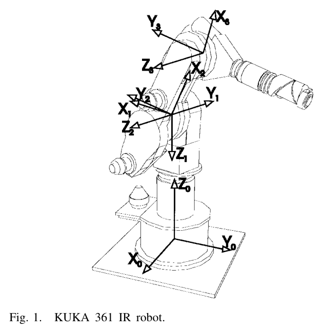
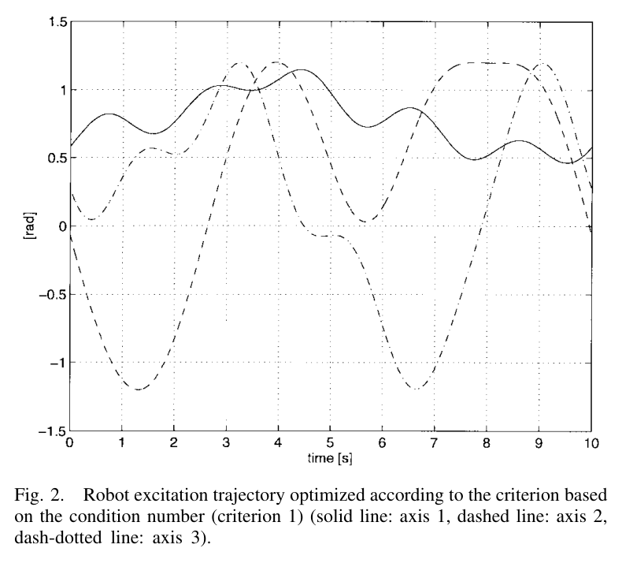
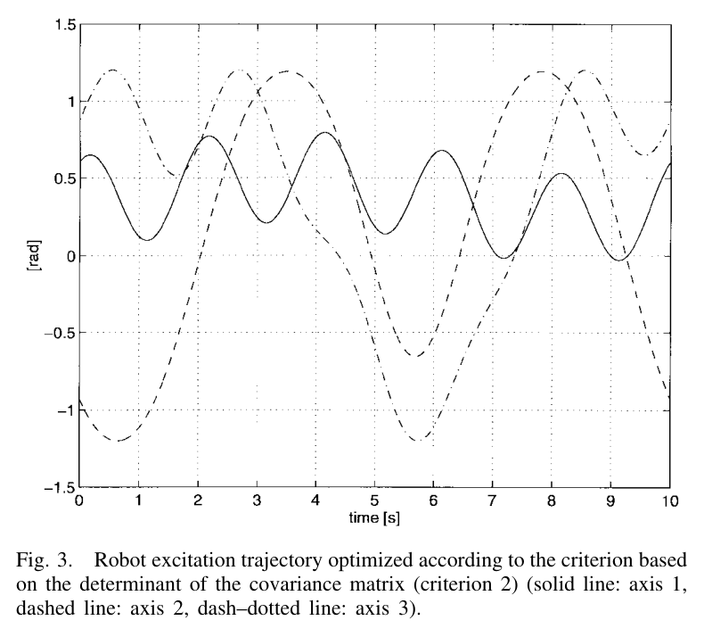
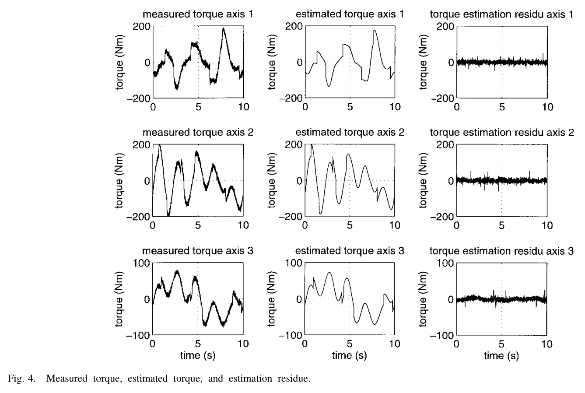
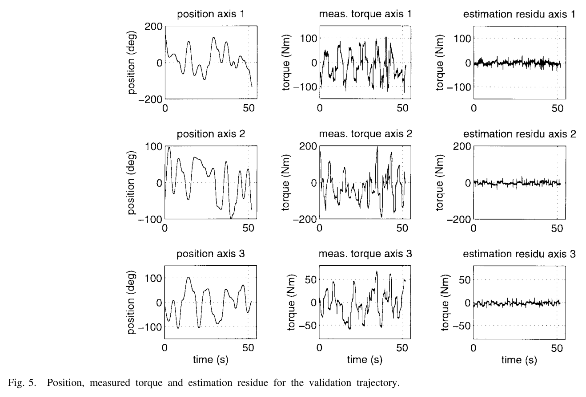

01 / The question
잘 풀리는 행렬에서,
잘 알게 되는 파라미터로
로봇 동역학 식별의 출발점은 단순하다. 제어와 예측에 필요한 파라미터를 충분히 정확하게 알지 못한다는 것이다.
제조사 자료는 없거나 실제 장비의 상태를 충분히 반영하지 못할 수 있다. 특히 마찰과 컴플라이언스 같은 특성은 직접 측정하기도 쉽지 않다. 따라서 로봇을 움직이고, 각도와 토크를 측정하고, 그 관계로부터 파라미터를 추정하는 실험이 필요하다.
문제는 어떤 움직임을 측정할 것인가다. 이 논문이 비교 대상으로 삼은 기존 접근은 회귀 행렬의 조건수를 중심으로 궤적을 평가했다. 조건수는 수치적 민감도를 알려주지만, 측정 잡음의 크기와 추정 공분산을 직접 나타내지는 않는다.
좋은 자극은 파라미터에 관한 정보를 더 많이 남기는 움직임이다.
연구의 기여는 세 요소를 하나의 절차로 연결한 데 있다. 각도와 토크의 잡음을 함께 다루는 최대우도 추정, 반복 가능한 푸리에 급수 자극, 그리고 추정 불확실성을 줄이는 D-최적 설계다.
02 / Statistical formulation
측정 각도도 틀릴 수 있다
로봇의 관성 관련 중심 파라미터와 마찰 계수를 하나의 벡터로 묶으면, 동역학은 파라미터에 대해 선형으로 쓸 수 있다. 다만 회귀 행렬을 구성하는 각도·속도·가속도 자체가 측정과 처리 과정을 거친다는 점이 중요하다.
Dynamics · 원문 식 (1)
τ: 관절 토크 · K: 동역학 회귀 행렬 · θ: 식별할 파라미터 벡터
각도에도 잡음이 있다면 회귀 행렬을 정확한 입력으로 취급할 수 없다. 이른바 오차 있는 변수(errors-in-variables) 문제다. 최대우도 추정은 동역학 파라미터 θ뿐 아니라 참 궤적을 표현하는 파라미터 δ도 함께 찾는다.
Maximum likelihood · 원문 식 (3), (4)의 요약
독립 가우시안 잡음을 가정한 개념식. 관절별 합은 생략했다. σ는 잡음의 표준편차이며, 가중치의 분모인 σ²가 분산이다.
| 기호 | 역할 |
|---|---|
| θ | 중심 파라미터와 마찰 계수. 시뮬레이션의 KUKA 3축 최소 파라미터 집합은 21개다. |
| δ | 잡음에 가려진 참 궤적을 표현하는 파라미터. |
| σq², στ² | 각도와 토크의 잡음 분산. 주기 반복 데이터로 추정한다. |
| F | 피셔 정보 행렬. 적절한 정칙 조건에서 역행렬이 추정 공분산의 크라메르–라오 하한을 이룬다. |
모델과 잡음 가정이 맞고 정칙 조건을 만족하면, ML 추정은 일치성과 점근적 불편성·효율성을 갖는다. 충분한 데이터에서 공분산은 크라메르–라오 하한에 접근한다. 이는 모든 유한 표본 실험에서 편향이 없다는 뜻은 아니다.
03 / Experiment design
주기성을 설계하면
데이터 처리도 함께 설계된다
각 관절의 궤적을 유한 푸리에 급수로 표현한다. 모든 관절이 같은 기본 주파수를 공유하므로 로봇 전체 움직임의 주기성이 유지된다. 최적화는 각 조화 성분의 계수와 자세 오프셋을 조절한다.
Fourier trajectory · 원문 식 (11)
ωf: 기본 각진동수 · N: 조화 성분 수 · 관절당 최적화 변수: 2N + 1개. qi,0는 작업 자세를 정하는 오프셋이다.
평균으로 잡음 억제
여러 주기의 같은 위상에 해당하는 측정을 평균한다. 특히 잡음이 큰 모터 전류 기반 토크 측정에 유용하다.
데이터에서 잡음 추정
반복 주기 사이의 차이를 이용해 잡음 특성을 추정한다. 별도의 잡음 측정 실험에 대한 의존을 줄인다.
해석적 속도·가속도
측정 각도에 푸리에 급수를 적합한 뒤 미분한다. 원시 측정값을 직접 수치 미분하는 부담을 줄인다.
자극 대역 지정
기본 주파수와 조화 성분 수로 대역을 정한다. 유연성 모드의 여기를 피하거나 목적에 따라 포함할 수 있다.
최적화의 목표: 불확실성 타원체를 작게
D-최적 설계는 파라미터 공분산의 행렬식을 최소화한다. 공분산으로 표현되는 신뢰 타원체의 부피는 행렬식의 제곱근에 비례하므로, 이는 파라미터를 함께 고려한 불확실성 영역을 줄이는 기준이다. 개별 파라미터의 표준편차를 모두 동시에 최소화하는 기준은 아니다.
각도 잡음을 무시할 수 있고 토크 잡음 분산을 정하면, 공분산은 설계 궤적의 회귀 행렬로 계산할 수 있어 참 동역학 파라미터가 필요하지 않다. 각도에도 잡음이 있으면 크라메르–라오 하한을 사용하며, 그 계산에는 파라미터 값이 필요하므로 초기 추정과 재설계를 반복한다.
각도 잡음을 포함할 때의 설계 순환
- Step 01초기 자극
조건수 기준 등으로 첫 실험 궤적을 만든다.
- Step 02파라미터 추정
초기 데이터로 동역학 파라미터를 얻는다.
- Step 03하한 최소화
현재 추정값으로 불확실성 하한을 계산해 궤적을 개선한다.
- Step 04재실험·갱신
새 데이터를 수집하고 추정과 설계를 반복한다.
정보가 많은 궤적도 로봇이 실행할 수 있어야 한다. 연구는 관절각·속도·가속도 한계와 순기구학에 기반한 말단 높이·충돌 제약을 연속 함수로 구성하고, SQP 기반 최적화인 당시 MATLAB의 CONSTR로 해결했다.
04 / Evidence from simulation
조건수가 더 커도,
전체 불확실성은 더 작았다
시뮬레이션은 KUKA IR 361의 3개 축과 21개 최소 파라미터를 대상으로 했다. 각도에는 잡음이 없다고 두고, 토크에는 실측에 근거한 분산 25·26·10 (N·m)²의 잡음을 적용했다.

- 푸리에 조화 성분
- 5개 / 관절
- 기본 주파수
- 0.1 Hz
- 한 주기의 표본
- 1,500개
관절당 최적화 변수는 11개다. 주기 10초의 자극을 150 Hz로 샘플링해, 조건수를 줄인 궤적과 공분산 행렬식을 줄인 궤적을 비교했다.


| 평가 항목 | 조건수 기준 | 행렬식 기준 |
|---|---|---|
| 조건수 | 4.15 | 5.94 |
| 파라미터 표준편차 | 비교 기준 | 21개 중 15개가 더 작음 |
| 공분산 행렬식 | 상대적으로 큼 | 상대적으로 작음 |
200회 반복은 무엇을 뒷받침했나
ML 추정을 200회 반복한 결과, 평균에 관한 신뢰구간 검토에서는 21개 중 16개(76%), 분산비의 χ² 구간 검토에서는 19개(90%)가 해당 구간 안에 들었다. 제공된 요약은 이를 1,500개 표본에서 불편성과 효율성에 부합하는 결과로 정리한다. 반면 500개 표본에서는 편향이 관측됐다.
05 / Evidence from the robot
실제 로봇에서는
모델의 빈틈까지 드러난다
실험 모델에는 토크 오프셋과 2축 중력 보상 스프링 파라미터를 추가했다. 모델 구성이 달라지면서 두 설계의 조건수도 각각 47.3과 111.7로 커졌다. 따라서 이 값은 앞선 시뮬레이션의 조건수와 같은 모델 조건에서 비교한 수치가 아니다.
측정과 전처리
- 안티에일리어싱: 8차 버터워스 필터, 차단 주파수 40 Hz. 제공된 요약은 필터 영향에 대한 처리를 사전 백색화·역변환 보정으로 기술한다.
- 반복 측정: 16주기를 평균하고, 반복 데이터로 잡음 분산을 추정했다.
- 잡음 수준: 각도 분산은 10−6 rad² 수준, 토크 분산은 축별 25.1 / 25.9 / 9.9 (N·m)²였다.
- 추정 방법 비교: ML과 초기 가중 최소제곱 결과가 같아, 이 실험에서는 각도 잡음의 영향이 무시할 만하다고 판단했다.

별도 궤적으로 예측력을 확인하다
검증에는 임의의 20개 점을 연결하고, 최대 가감속과 정지 구간을 포함한 궤적을 사용했다. 식별에 쓰인 움직임 밖에서도 모델이 토크를 설명하는지 확인한 것이다. 아래 결과는 10 Hz 저역 통과 처리 후의 검증 잔차를 요약한다.

| 축 | 검증 잔차 평균제곱 | 모델 1과의 비교 |
|---|---|---|
| 1축 | 45.0 (N·m)² | 모델 1이 약 20% 큼 |
| 2축 | 53.6 (N·m)² | 모델 1이 약 20% 큼 |
| 3축 | 12.0 (N·m)² | 모델 1이 약 20% 큼 |
행렬식 기준의 모델 2가 조건수 기준의 모델 1보다 작은 검증 잔차를 보였다. 다만 비율의 기준은 분명히 해야 한다. “모델 1이 모델 2보다 약 20% 크다”를 그대로 환산하면, 모델 1을 기준으로 한 모델 2의 감소율은 약 16.7%다. 여기서 비교하는 양도 토크 오차의 진폭이 아니라 잔차의 평균제곱이다.
작은 공분산이 정확한 모델을 보장하지 않는 이유
제공된 요약에서 검증 잔차는 추정 잡음 분산보다 컸다. 연구는 저속 잔차와 함께 이를 스틱션·백래시·유연성·기구 오차 등 모델 불일치의 징후로 해석한다. 반복할 때 비슷한 값을 얻는 정밀성과, 참값에 가까운 정확성은 구분해야 한다.
추정값이 촘촘하게 모여도,
틀린 곳에 모일 수 있다.
공분산은 추정값의 산포를 설명하지만, 모델 구조에서 생기는 편향까지 포괄하지는 않는다. 이런 상황에서 ±3σ만 제시하면 실제 오차를 과소평가할 수 있다. 단순한 마찰 모델과 전류–토크 비례 가정, 별도 보정이 필요한 기구 오차가 이 연구를 해석할 때 남는 한계다.
06 / Implications for HR35
HR35에 가져갈 것은
궤적보다 실험의 논리다
다음은 논문에서 직접 검증한 결과가 아니라 HR35 식별을 위한 적용 제안이다. 주기 자극의 이점은 매력적이지만, 로봇의 관절각 궤적을 굴착기의 조이스틱 입력으로 옮기는 데에는 추가 검증이 필요하다.
| 가져올 원리 | HR35에서 확인할 것 |
|---|---|
| 주기 자극과 해석적 미분 | 축 G의 푸리에형 조이스틱 입력을 후보로 삼되, 실제 관절 응답이 반복 가능하고 충분한 대역으로 측정되는지 먼저 확인한다. |
| 반복 데이터의 잡음 추정 | 압력 count의 주기 간 변동을 측정한다. 센서 잡음과 하중·온도·작동 상태의 변화를 구분한다. |
| 공분산 중심의 보고 | 회귀 행렬 조건수와 함께 파라미터 표준편차, 상관성, 별도 검증 잔차를 기록한다. |
| 저속 잔차 진단 | 속도·방향·하중에 따른 잔차를 비교해 마찰 모델에 어떤 항이 부족한지 살핀다. |
| 제약을 포함한 설계 | 관절 한계, 작업 공간, 지면 및 자기 충돌 제약을 궤적 최적화와 실행 검증에 반영한다. |
20 Hz 경사계의 미분 문제에는 조건이 붙는다
측정 각도에 푸리에 급수를 적합하면 그 급수의 속도·가속도를 해석적으로 구할 수 있다. 그러나 20 Hz 측정에 담기지 않은 움직임까지 복원되는 것은 아니다. 입력 명령을 미분한 값이 실제 관절의 속도·가속도인 것도 아니다. 센서 대역폭, 지연, 실제 응답의 조화 성분과 추종 오차를 함께 확인해야 한다.
16주기 평균은 실험 설계의 유용한 출발점이다. 다만 필요한 반복 수는 HR35에서 관측한 잡음과 상태 변화, 목표 정밀도를 기준으로 정해야 한다.
첫 실험에서 남길 기록
- 반복 주기 사이에서 실제 각도와 압력 응답이 얼마나 일치하는가?
- 푸리에 적합 잔차에 주기적 구조나 고주파 성분이 남는가?
- 조건수 개선과 파라미터 표준편차 감소가 함께 나타나는가?
- 저속·방향 전환·하중 변화에서 검증 잔차가 어떻게 달라지는가?
07 / Takeaway
다음 실험에서는
‘얼마나 알게 되었는가’를 묻자
이 논문의 핵심은 푸리에 급수를 사용하는 기법 하나에 있지 않다. 자극 궤적, 측정 잡음, 추정 방법, 불확실성 평가를 하나의 실험 설계로 연결했다는 데 있다.
주기성으로 반복 가능한 데이터를 만들고, 그 데이터에서 잡음을 추정하고, 공분산을 통해 파라미터 정보의 양을 평가한다. 마지막에는 별도 궤적의 잔차를 확인해, 통계적 정밀도 뒤에 가려진 모델 편향을 찾는다.
좋은 실험은 불확실성을 줄인다.
좋은 검증은 남은 오차의 이유를 드러낸다.
Sources & editorial notes
출처와 해석 메모
- J. Swevers, C. Ganseman, D. Bilgin Tükel, J. De Schutter, and H. Van Brussel. “Optimal Robot Excitation and Identification.” IEEE Transactions on Robotics and Automation, 13(5), 730–740, 1997. https://doi.org/10.1109/70.631234
- 이 글은 제공된 Obsidian 논문 요약을 공개 해설 형식으로 재구성했다. 실험 수치와 식 번호는 해당 노트에 따르며, 원문 전체에 대한 별도 대조는 수행하지 않았다. 그림 1–5는 노트에 첨부된 논문 그림을 유지했다.
- 기호 σ와 σ²를 각각 표준편차와 분산으로 구분했다. “약 20%”는 노트의 비교 표에 따라 모델 2 대비 모델 1의 잔차 평균제곱 증가로 기술했으며, 역방향 감소율과 구별했다.
- 필터 보정과 사전 백색화의 상세 절차, 잡음 분산과 잔차의 처리 단계별 비교는 구현 시 원문의 정의를 확인할 항목이다. 이 글의 간략한 설명을 필터 역변환의 구현 명세로 해석해서는 안 된다.
- HR35 관련 내용은 적용 가설과 실험 제안이다. 원 논문의 로봇 실험이 HR35의 센서 대역, 유압 응답, 작업 공간 조건까지 검증한 것은 아니다.